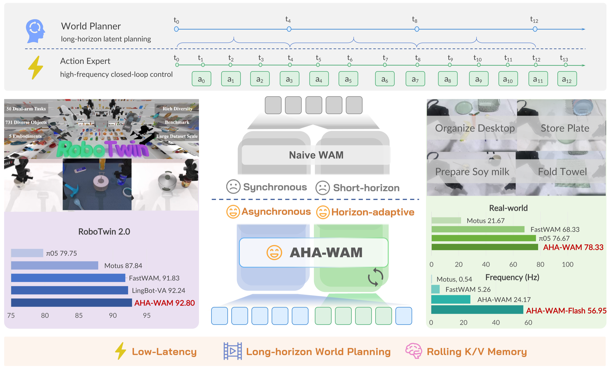
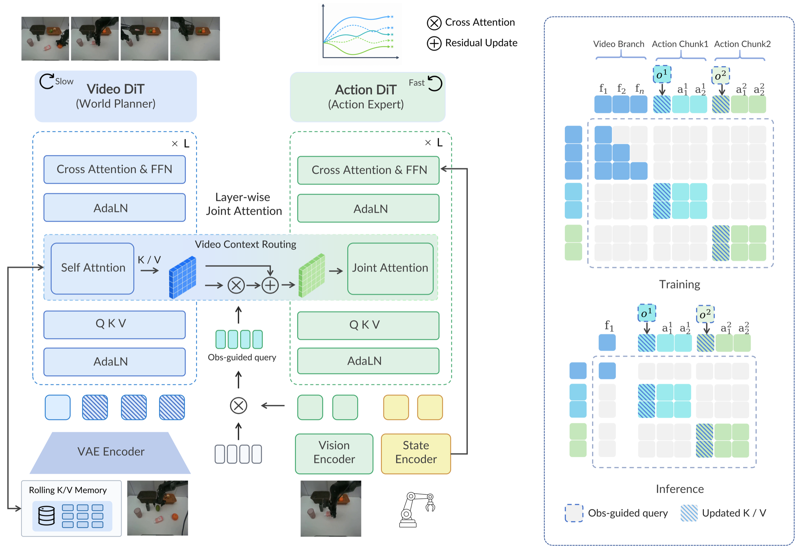
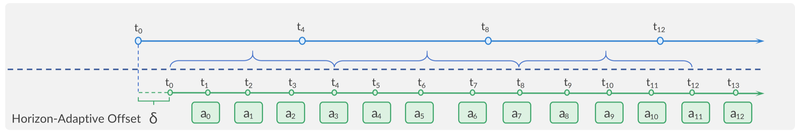

AHA-WAM
Asynchronous Horizon-Adaptive World-Action Modeling with Observation-Guided Context Routing
1Shanghai Jiao Tong University
2Shanghai AI Laboratory
3Baidu AI Cloud
4The University of Hong Kong
Abstract
World-action models inject physical priors into robot policies by learning visual scene dynamics together with actions. Existing formulations, however, bind world prediction and action execution to the same short temporal rhythm. AHA-WAM reorganizes this interface around temporal asymmetry: a low-frequency video DiT acts as a long-horizon world planner with rolling K/V memory, while a high-frequency action DiT executes short closed-loop action chunks by querying reusable layerwise planner context. Horizon-adaptive offset training makes the executor robust to planner-executor phase shifts, and Observation-Guided Video-Context Routing adapts cached planner context to the latest visual observation without rerunning the video DiT. Across RoboTwin 2.0 and real robots, AHA-WAM reaches 92.80% average RoboTwin success, 78.33% original-setting real-world success, and 24.17Hz closed-loop control; the distilled AHA-WAM-Flash variant further reaches 56.95Hz.
Introduction
AHA-WAM separates what should be slow from what must be fast. The video branch forms a reusable long-horizon latent world plan; the action branch repeatedly adapts that plan to the current observation and produces executable action chunks in a high-frequency control loop.

Average success across 50 dual-arm tasks, without robot-data pretraining.
Original-setting success across four physical bimanual tasks.
ODE-distilled closed-loop frequency with a 10.82x speedup over Fast-WAM.
Method
AHA-WAM reorganizes world-action modeling around temporal asymmetry. The method first separates long-horizon world planning from high-frequency action execution, then keeps the reused planner context aligned with the latest observation and stable across asynchronous planner-executor phases.

Planner-Executor Architecture
AHA-WAM keeps a dual-DiT world-action model but assigns each branch a different temporal role. The video DiT predicts long-horizon visual latents and exposes layerwise planner context; the action DiT receives proprioception directly and consumes routed planner context through layerwise joint attention to denoise short executable chunks.
Layerwise Coupling
One video-DiT refresh exposes latent K/V context that can be amortized over multiple action-DiT updates. The action branch therefore benefits from learned visual dynamics while avoiding expensive future-frame rollout in the per-update control loop.
Observation-Guided Video-Context Routing
Asynchronous execution reuses one planner context across multiple action updates, which can make the context stale. OVCR builds compact routing queries from the latest visual observation, reads the planner K/V context, and applies gated residual updates so each action chunk sees a planner representation aligned with current visual evidence.

Horizon-Adaptive Offset Training
The action grid is randomly shifted inside the video horizon, teaching the executor to consume planner context under the phase offsets created by asynchronous streaming.
Rolling Planner Memory
The low-frequency video planner maintains a fixed-size FIFO rolling K/V memory over recent planner refreshes. This extends the planner's temporal receptive field for long-horizon tasks where completed subgoals or displaced objects may no longer be fully visible.
Streaming Inference and Real-Time Optimization
At deployment, planner prefill and action execution run as non-blocking streams. TensorRT, CUDA-graph capture, loop-invariant hoisting, and ODE distillation reduce action-update latency while preserving the same planner-context and OVCR interface.
Experiments
The experiments are organized around five matched questions: simulation capability, component mechanism, real-robot deployability, out-of-distribution robustness, and closed-loop efficiency. The tabs keep these axes parallel with the paper's tables and figures.
Table 1
Real Robot
AHA-WAM is deployed on two AgileX Piper arms using ego-view RGB observations. The four tasks are intentionally complementary: rigid-object placement, deformable manipulation, long-horizon multi-object organization, and fine-grained contact-rich tool use. Select a task to compare original and generalization rollouts under the same model layout.
Store Plate Rollouts
Compare the same task across Motus, Fast-WAM, π0.5, and AHA-WAM.
Supplementary Videos
Runtime clips isolate the effect of the asynchronous control loop, while the demo rollouts collect representative AHA-WAM successes across original and shifted task settings.
Side-view runtime comparisons for Motus are paired with the available AHA-WAM rollout views.
Citation
@article{cai2026ahawam,
title={AHA-WAM: Asynchronous Horizon-Adaptive World-Action Modeling with Observation-Guided Context Routing},
author={Cai, Jisong and Ling, Long and Chu, Shiwei and Liu, Zhongshan and Kang, Jiayue and Liang, Zhixuan and Xu, Wenjie and Mao, Yinan and Zhang, Weinan and Yang, Xiaokang and Ying, Ru and Zheng, Ran and Mu, Yao},
journal={arXiv preprint arXiv:2606.09811},
year={2026}
}